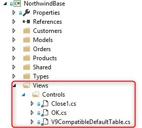

Control Models
So far we discussed Field models which are migrated as Types.
In Magic you could also have GUI models, which are migrated as a user controls and could be found
in the Views/Controls folder in the Base project:

If you want to use them in your view you need to:
- Open the view designer screen
- In the toolbox right click on any tab and choose Add Tab
- Provide it with a meaningful name, e.g. MyControls, and select it
- On the view right click and choose Add controls to toolbox
- Select your Base dll from your bin directory
- In the opened screen expand the node with your controls, for example Northwind.Views.Controls

- From here on you can use them as any other control
Help us improve, Edit this page on GitHub
or email us at info@fireflymigration.com